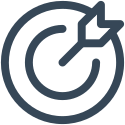
Week 1
Start & richting
Kennismaken, persoonlijke doelen bepalen en ontdekken waar digitale vaardigheden nieuwe mogelijkheden kunnen creëren.
Persoonlijk startpunt en doelen
Een praktisch programma van 6 weken waarin deelnemers digitale vaardigheden en AI leren toepassen om zelfstandiger hun volgende stap richting werk en ontwikkeling te zetten.
Digitaal vaardig zijn betekent vandaag veel meer dan kunnen omgaan met een computer.
Werk zoeken, jezelf presenteren, informatie vinden, online communiceren en nieuwe technologie zoals AI gebruiken: digitale vaardigheden spelen een steeds grotere rol in hoe mensen zelfstandig deelnemen aan de samenleving.
Voor mensen die minder ervaring hebben met deze ontwikkelingen, kan de afstand steeds groter worden. Niet omdat het hen aan potentieel ontbreekt, maar omdat kennis, ervaring en vertrouwen niet altijd vanzelf meegroeien. Daardoor wordt het moeilijker om zelfstandig kansen te vinden, jezelf goed te presenteren en de volgende stap richting werk of ontwikkeling te zetten.
Steeds meer kansen en mogelijkheden beginnen vandaag online.
Nieuwe technologie verandert hoe we leren en werken.
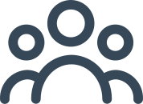
Weten hoe je iets aanpakt, maakt zelfstandig handelen makkelijker.
Een praktisch en inspirerend programma dat nieuwe vaardigheden omzet in echte mogelijkheden.
WiseGround helpt deelnemers om in 6 weken hun digitale vaardigheden, zelfvertrouwen en zelfstandigheid verder te ontwikkelen. We combineren praktische training met moderne digitale tools en AI, zodat deelnemers niet alleen leren hoe iets werkt, maar vooral hoe ze het zelf kunnen toepassen.
Geen standaardtraining vol theorie, maar leren door te doen. Deelnemers werken gedurende het programma aan concrete resultaten die ze direct kunnen gebruiken bij hun volgende stap richting werk of verdere ontwikkeling.
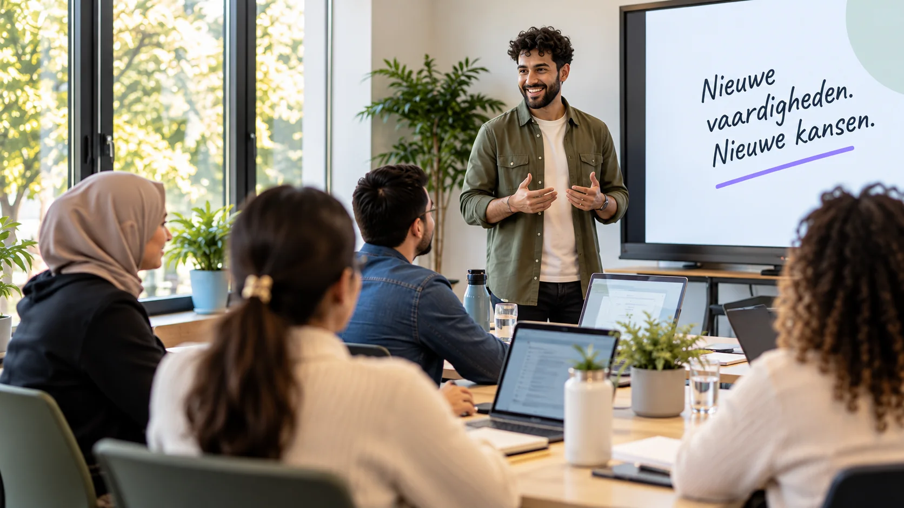
Direct toepasbare vaardigheden met focus op doen en ervaren.
Ruimte voor het eigen niveau, persoonlijke doelen en ontwikkeling.
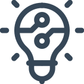
Digitale tools en AI die aansluiten op de wereld van vandaag.
Concrete resultaten die deelnemers meenemen naar hun volgende stap.
Iedere week heeft een duidelijk thema, concrete opdrachten en een zichtbaar resultaat. Zo bouwen deelnemers stap voor stap aan iets wat ze daadwerkelijk meenemen.

Kennismaken, persoonlijke doelen bepalen en ontdekken waar digitale vaardigheden nieuwe mogelijkheden kunnen creëren.
Praktische digitale vaardigheden ontwikkelen en moderne tools gebruiken om zelfstandiger en efficiënter te werken.
AI praktisch, slim en verantwoord inzetten voor informatie, ideeën, schrijven en dagelijkse taken.
Werken aan een professioneel CV, LinkedIn-profiel en digitale middelen gebruiken om kansen te vinden.
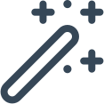
Nieuwe vaardigheden samenbrengen in een eigen praktische opdracht of mini-project.
Eigen werk presenteren en concrete vervolgstappen bepalen richting werk of verdere ontwikkeling.
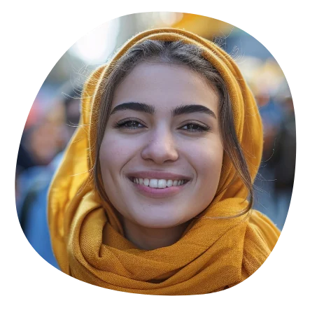
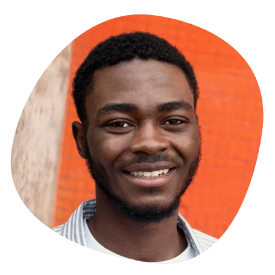
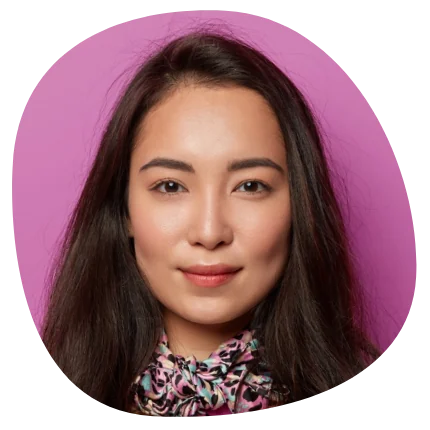
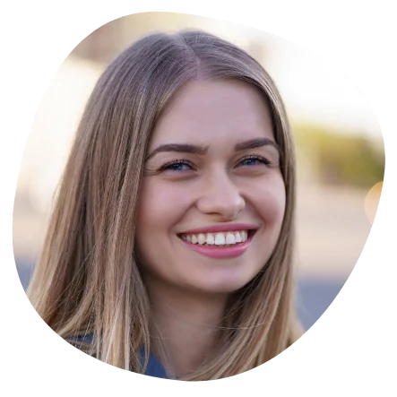
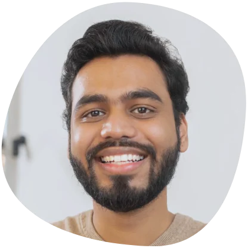
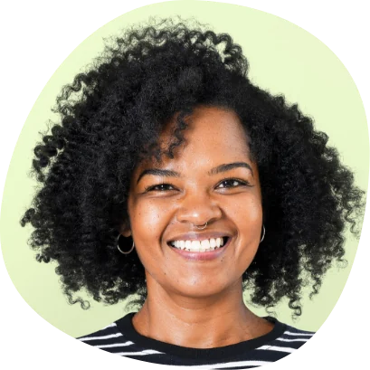
Een traject met concrete resultaten voor deelnemers dat aansluit op gemeentelijke doelen rond participatie, zelfredzaamheid en ontwikkeling.
Na zes weken beschikken deelnemers niet alleen over nieuwe kennis, maar over concrete vaardigheden en middelen waarmee zij zelfstandig verder kunnen richting werk, opleiding of participatie.
Plan een kennismakingModerne digitale tools zelfstandiger gebruiken en AI praktisch en verantwoord inzetten.
Een professioneel CV, LinkedIn-profiel en digitale middelen om kansen te vinden.
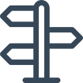
Zelfstandig informatie vinden, keuzes maken, opdrachten uitvoeren en hulpmiddelen toepassen.
Iedere deelnemer sluit af met resultaten, een presentatie en een persoonlijk actieplan.
Het Foundation Programma staat klaar. Samen bespreken we de doelgroep, de mogelijkheden en hoe een eerste groep binnen uw gemeente kan starten.
Laten we kennismaken